Index:
Create
Key Milestones:
Milestone 1: An early milestone was getting the Micro:bit data logging system working so that live sensor values could be collected instead of only using online data. This made the project a real embedded system and produced the raw CSV data later used in Python.
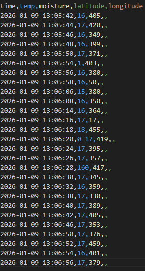
Milestone 2: The next major milestone was solving the GPS and radio transmission issue. GPS data had to be split into smaller chunks, transmitted, rebuilt, and then parsed correctly. Fixing this made the logging system more reliable and made it possible to extract latitude and longitude for later weather retrieval.

Milestone 3: After that, I built the cleaning pipeline. The raw data was not ready for modelling directly, so I cleaned it, removed duplicates, handled missing values, grouped it into hourly data, and added matching hourly Open-Meteo data.
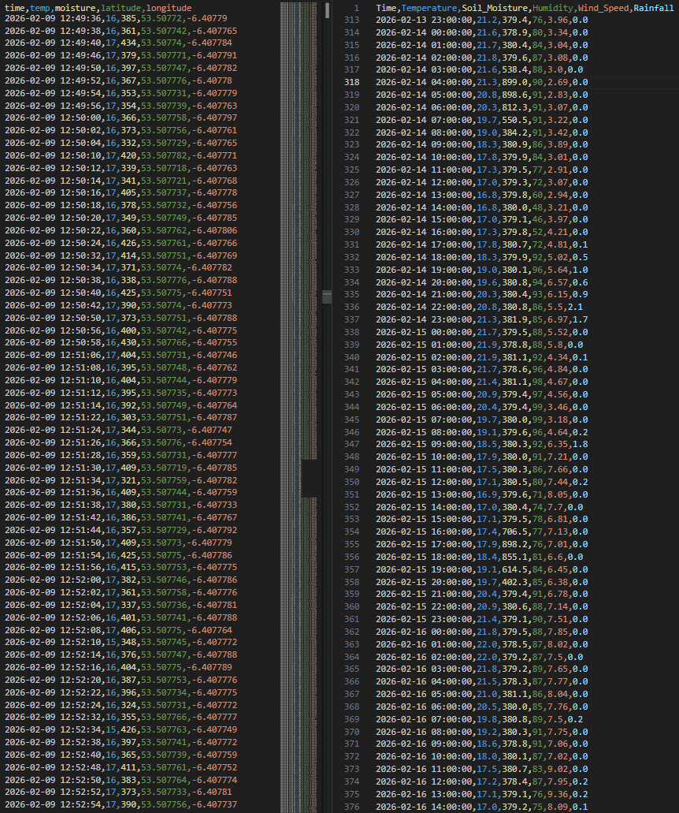
Milestone 4: A major modelling milestone was building and tuning the final wildfire risk model. I adjusted the model several times so that ordinary conditions did not start too high and the dry spell and extreme scenarios were separated more clearly.
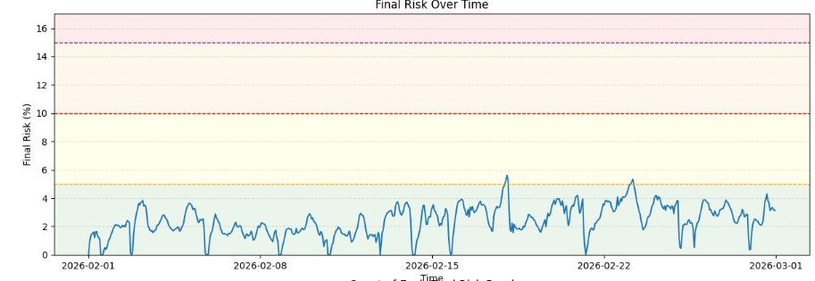
Milestone 5: The final major milestone was adding the what-if scenarios. I created a dry spell scenario and an extreme weather scenario so that the same model could be tested under more dangerous conditions over time.
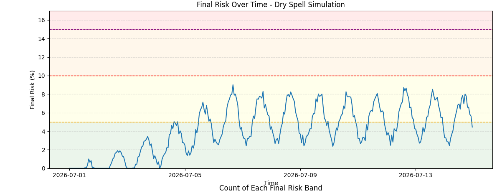
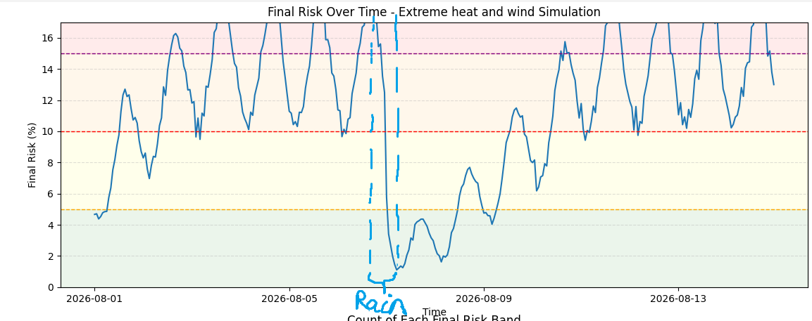
Description of the Model:
The model predicts wildfire risk from environmental conditions. It is designed to answer two questions: how dangerous are the current conditions, and has dryness been building up over time?
The model sits at the end of the project pipeline. Temperature and soil moisture come from the logged project data, while humidity, wind speed, and rainfall come from Open-Meteo using GPS-derived latitude and longitude. These inputs are combined to make the wildfire-risk estimate more realistic.
Before the inputs are combined, they are normalised so that values on different scales can be compared more fairly. Some of these are then inverted into risk effects, for example lower soil moisture or lower humidity contributing more to risk.
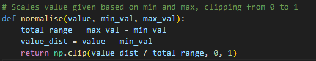
The model first calculates InstantRisk, which represents how much the current conditions help fire right now. It then calculates DrynessInput and uses this to update CarryoverRisk, which gives the model memory so that repeated dry conditions can build risk over time. These are then combined, scaled into the FinalWildfireRiskIndex, and converted into the categories Low, Moderate, High, or Extreme.
The overall structure of the model was influenced by wildfire danger systems like EFFIS [4], where different environmental conditions are combined into sub-indices and then into one final fire-danger output. I then adjusted the weights, thresholds, and scaling values through repeated testing on my own datasets from the what-if simulations, so that ordinary conditions did not start too high, worsening conditions pushed the risk up more clearly, and the dry spell and extreme scenarios were separated more properly.
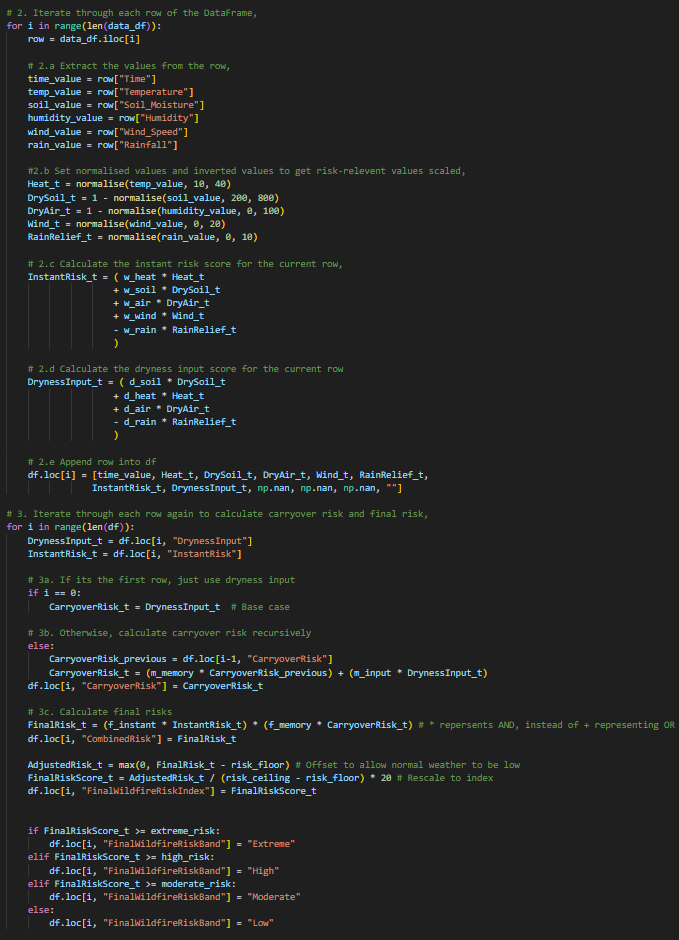
Testing During Development:
I used unit testing and integration testing during development to check that key parts of the model were working correctly. I focused on functions that directly affected the wildfire risk calculation and the what-if scenarios.
Test 1 - normalise() function: This test checked that the normalise() function scaled input values correctly in a standard case. This was important because the model depends on correctly scaled values before combining them.
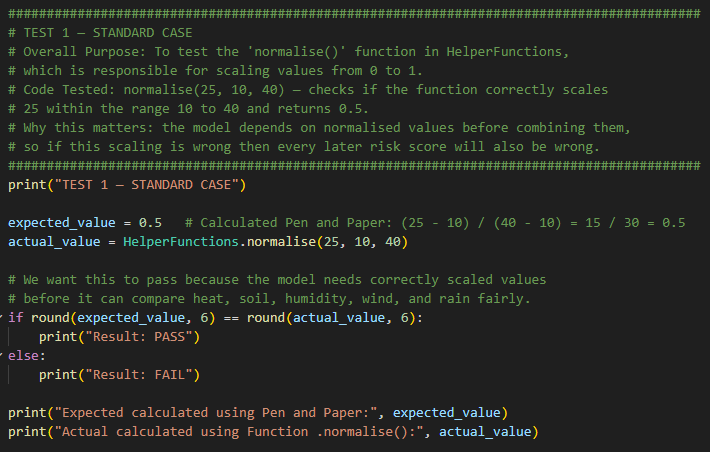
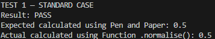
Test 2 - update_soil_moisture() function: This test checked the soil moisture update function in both a normal case and a boundary case. This was important because the what-if scenarios rely on soil moisture changing realistically but still staying within valid limits.
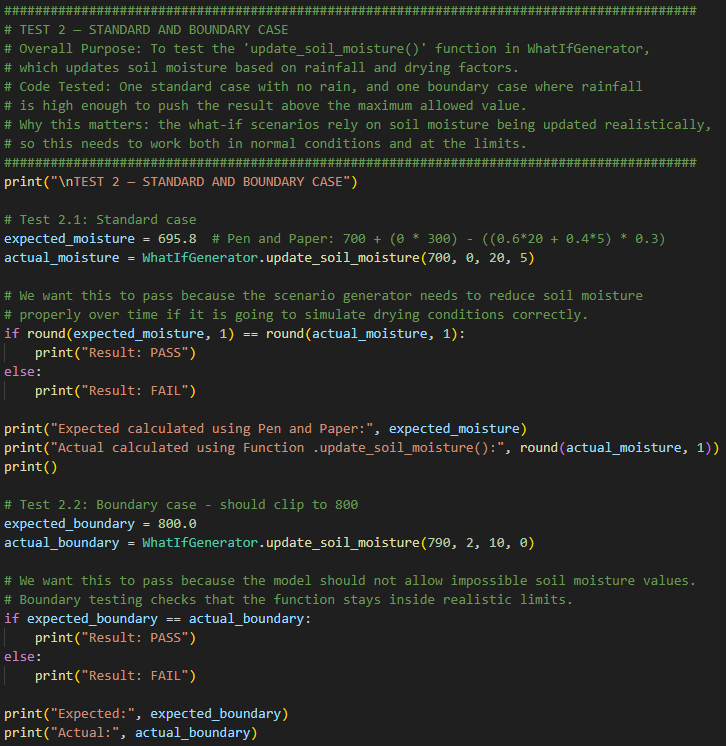
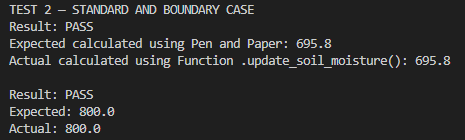
Test 3 - integration test: This test checked that a generated scenario dataset could be passed into the wildfire risk model and produce a valid result. This was useful because it tested two parts of the project working together rather than only one function on its own.
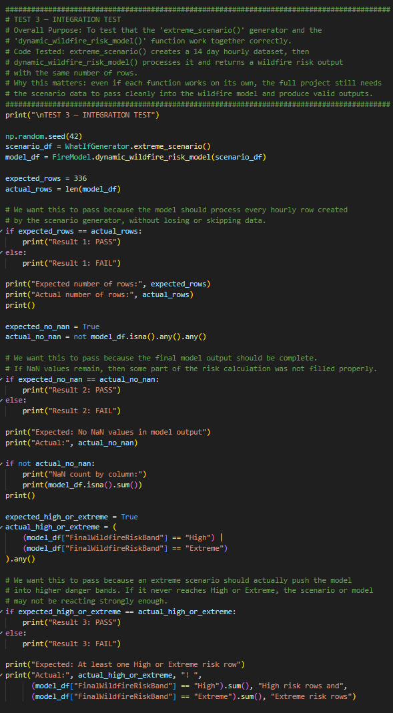
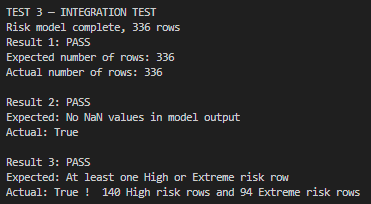
Summary Test Table:
| Test No. | Description | Test Data | Expected Result | Actual Result | Pass/Fail |
|---|---|---|---|---|---|
| 1 | Check that normalise() scales a standard value correctly. | normalise(25, 10, 40) | 0.5 | 0.5 | Pass |
| 2.1 | Check that update_soil_moisture() works in a standard case. | update_soil_moisture(700, 0, 20, 5) | 695.8 | 695.8 | Pass |
| 2.2 | Check that update_soil_moisture() stays within the maximum boundary. | update_soil_moisture(790, 2, 10, 0) | 800.0 | 800.0 | Pass |
| 3.1 | Check that the generated extreme scenario keeps the correct number of hourly rows after passing through the wildfire model. | extreme_scenario() passed into dynamic_wildfire_risk_model() | 336 rows | 336 rows | Pass |
| 3.2 | Check that the final model output contains no missing values. | Output dataframe from dynamic_wildfire_risk_model(extreme_scenario()) | No NaN values | No NaN values found | Pass |
| 3.3 | Check that the extreme scenario produces at least one High or Extreme wildfire-risk row. | Output dataframe from dynamic_wildfire_risk_model(extreme_scenario()) | At least one High or Extreme row | Yes - at least one High or Extreme row produced | Pass |
Problems Encountered During Create Stage:
Problem 1: One of the main problems I encountered was transmitting GPS data reliably between the Micro:bit and the computer. The GPS sentence was longer than the radio system could safely handle in one go [6], and serial communication also had character limits because incoming GPS serial lines could overload the maximum buffer size [7]. Because of this, GPS data was sometimes cut off or mixed with other values by the time it reached Python, which meant the latitude and longitude could not be extracted.
To solve this, I changed the sender code so that the GPS sentence was split into smaller chunks before being transmitted. I also added clear start and end markers so that Python could recognise where the GPS data began and ended, rebuild the full sentence safely, and parse the latitude and longitude. I later fixed another issue by resetting the chunk index before each transmission, so that every GPS sentence started sending from the beginning.
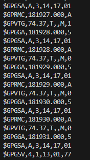
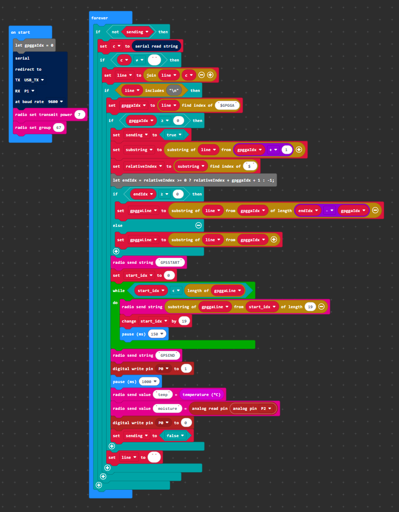
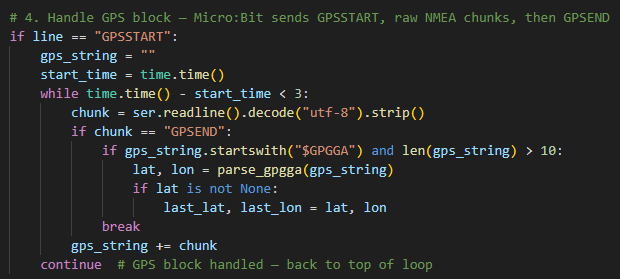
Problem 2: Another real problem came when tuning the wildfire model itself. My earlier versions were technically running, but the outputs were not useful enough yet. At first, the base score was sitting too high, so fairly ordinary conditions were already starting well above where I wanted them. After that, when I changed the settings too aggressively, the model went too far the other way and became too noisy or too sensitive.
To diagnose this, I used the time-series graph, the risk-band counts, and the correlation heatmap after each version. These showed that soil dryness was dominating too much of the model, while rainfall was not reducing risk strongly enough. To fix this, I adjusted the weights, the memory terms, and the risk floor and ceiling, and I also made the two parts of the model more clearly separate in meaning: InstantRisk for how much the current conditions help fire right now, and DrynessInput for how much dryness is building up over time.
This improved the model because the final version responded more clearly to worsening conditions without making normal conditions look too dangerous. It also made the scenario outputs easier to compare and made the final wildfire risk categories feel more deliberate rather than arbitrary.
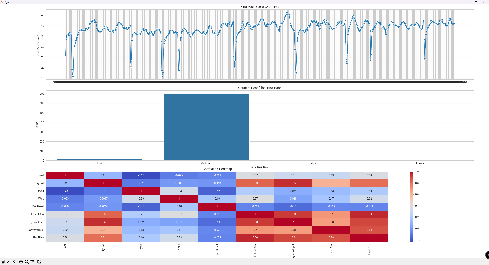
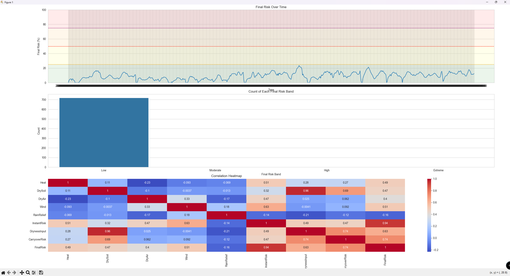